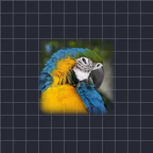

Растушёвка

Смягчает края альфа-канала слоя, проявляя их от контура. Чем больше «Итерации», тем плавнее и глубже переход. Стиль «Классический»: «Внутрь» растворяет край внутри контура; «Размытие альфы» распространяет мягкий край и наружу.
Растушёвка смягчает край слоя. Сила — ширина мягкого края. Края: Внутрь (край растворяется внутри слоя) или Размытие альфы (мягкий край выходит и за исходный контур). Используйте её после эффекта Хромакей, чтобы вырез был чище.
Настройки
| Настройка | Тип | Диапазон | По умолчанию |
|---|---|---|---|
| Сила | Число | от 0 до 600 | 42.5 |
| Итерации | Число | от 1 до 10 | 3 |
| Края | Выбор | Внутрь, Размытие альфы | Размытие альфы |
| Стиль | Выбор | Классический, Стандартный | Стандартный |